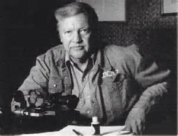

A few weeks ago, after I sent a query to a widely known magazine (which will remain unnamed) about their possible interest in a review of The Complete Poems of James Dickey, the response was understandable, if peculiar (and this response is paraphrased to protect the innocent): “We don’t really see the worth of such a review, since it’s just an anthology of all his poems.” After deciding to bring the review to Shenandoah instead, I began to think about reasons for the magazine’s response, and I concluded that it is not, as some have argued about Dickey’s standing as a whole, that his work is dimming in contemporary poetic bearing, but that Dickey’s reputation is still ruptured by the “Dickey stories,” as Ward Briggs, the editor for this new edition, termed the controversies in some recent correspondence.
{kind=link}
Some might find this conclusion quite obvious, even naïve, but I was introduced to Dickey’s poetry merely seventeen years ago in Leon Stokesbury’s 1996 The Made Thing, an anthology of contemporary Southern poets. Finding Dickey’s deeply mythic and muscular poetry almost dizzyingly evocative and inspiring, I went on to purchase, in 1998, James Dickey: The Selected Poems (Wesleyan Poetry Series), edited by Robert Kirschten. This edition now sits on my shelf, like so many of my books of Dickey’s poetry and scholarship about Dickey’s poetry, nearly destroyed from repeated rereadings. Because of my relatively recent exposure to his poetry, my love of Dickey’s work is blessedly devoid of any personal anecdotes from the bank of Dickey antics that seem to preclude more than a few editors and poets from acknowledging the significance and power of his work. Undoubtedly Dickey’s poetry is inconsistent: the later work is difficult, even opaque at times, but reveals Dickey’s refusal to stagnate stylistically and to push his imagination into new territories, even if some of these aspirations leave all but the most vehement of his devotees behind.
Nor is it a secret that Dickey could be a difficult person; indeed, entire books exist to focus on—or at least heavily depend on—Dickey’s behavior, some of which seem well-written and fair, while others seem intentionally destructive. Indeed, the pre-publication commentary, or blurbs, on the back cover of The Complete Poems of James Dickey, qualify their statements (rightfully) by mentioning this aspect of Dickey’s life: Joyce Carol Oates, writes, for instance, that “[Dickey] cannot be reproached for the fact that some of these aspects of a vast, complex self are at war with the others”; Stanley Plumly posits that “sometimes the man, in his drive for fame, seemed to get in the way of the poet.” Thankfully, The Complete Poems of James Dickey reveals just how powerful a force Dickey’s work—particularly poems written from the 1950s through the 1970s—remains in contemporary poetry, the relevance of his power to a great many poets, Southern and otherwise.
So why care about The Complete Poems of James Dickey in all its six pounds of heft? Because, indeed, it is much more than Dickey’s entire poetic oeuvre, though the poems are the book’s center. It is not hyperbole to state that this volume represents for me a new editorial standard against which I will compare my own editions. For any scholar or reader of Dickey’s poetry, this book handily overwhelms antecedent editions in its sheer abundance of information about the work. In addition to the prefatory matter—the foreword by Richard Howard (characteristically lucid and informative), a preface, acknowledgements, and a very helpful introduction by editor Ward Briggs—an owner of this edition comes into possession of the massive and useful Apparatus Criticus of nearly two hundred pages, which includes
• abbreviations
• a comprehensive list of anthologies that reprinted Dickey’s poetry
• a list of previous appearances of each poem, specifically (a), the first publication of eachpoem; (b) where each poem was collected; (c) often expansive contextual notes; (d) where each poem was reprinted; and (e), any extant textual variants of the poems.
Moreover, this book boasts comprehensive indexes to help the reader locate anything quickly, a major correction to the conspicuous omission in The Whole Motion: The Collected Poems, 1945-1992 (Wesleyan, 1992). These include
• an index of titles
• an index of first lines
• an index of names in the Apparatus Criticus
Most important is the addition of forty poems not included in The Whole Motion, supplying Dickey readers and scholars alike with a refined and complete understanding of Dickey’s poetic accomplishment. Finally, this edition corrects approximately fifty typographical errors in The Whole Motion—a typo in every five poems or so—making this edition not only complete, but substantively superior in rendering the poems as Dickey wanted them to be.
This review would feel incomplete if I did not acknowledge the design and quality of the tangible product itself. At nearly $80, the book is not inexpensive, but the quality wholly reflects the investment. The book is hardbound, with luscious paper and a beautiful matte dustcover, and the cover image is both striking and beautiful: a relatively early photograph of Dickey, taken by Timothy Galfas, courtesy of James Dickey Papers, Manuscripts, Archives, and Rare Book Library of Emory University, overlaid with a facsimile of Dickey’s voluptuous signature, courtesy of Thomas Cooper Special Collections at the University of South Carolina. Special mention should be made of the printer, as well, as even the integral black space that follows the first section of the long poem Apollo is implemented to great effect, replicating the idiosyncratic and breathless feeling of the poem’s “moon-dark pulling.”
In sum, Ward Briggs has brought to readers his labor amoris, a “partial payment,” he writes in the preface, for his thirty-year friendship with Dickey. Here readers are privy not merely to the poetry but to the biographical and historical contexts of the poems. Dickey’s best work, poems as variegated as “The Vegetable King,” “The Heaven of Animals,” “Cherrylog Road,” “The Last Wolverine,” and “Falling,” just to name a few, are revivified by Briggs’ love for his subject. The poems demand, as ever, acknowledgement that Dickey, no matter the stories that orbit his reputation, will remain a significant force in the poetry of the American South and in American letters in general. Fortunately, this essential text ensures that succeeding generations of readers and poets will come to know this extraordinary work without the freight of irrelevant controversy.
Outstanding review, focusing on the work not the “Dickey stories” (which I personally am tired of hearing about). Let us celebrate with William Wright the overwhelming success of Dickey’s long, poetic career of experimentation and invention, which makes so many other writers pale in comparison. Even now, much critical work needs to be done to articulate Dickey’s poetic principles, especially for his middle and late work. As Kenneth Burke noted, terminology coaches perception. We need a critical vocabulary to catch up to the amazing stylistic achievement that is Dickey’s legacy.